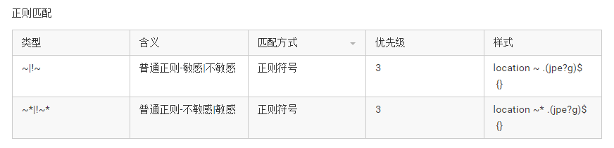

location常见配置属性
location主要是根据Server匹配到的请求路径和关键字去响应和处理。
语法：
location optional_modifier location_match { ... }
其中：optional_modifier是匹配条件，location_match是匹配的样式，{}是要执行的操作。匹配条件主要有两种:正则/前缀字符。
匹配规则

普通匹配
| 类型 | 含义 | 匹配方式 | 优先级 | 样式 |
|---|---|---|---|---|
| =/路径 | 精确匹配 | 前缀 | 1 | location = /image {} |
| ^~ | 优先匹配 | 前缀 | 2 | location ^~ /page {} |
| @ | 内部重定向 | 前缀 | location @name {} | |
| 空/ | 通用匹配 | 前缀 | 4 | location / {} |
使用原则：
前提：根据请求url，获取uri即除了域名/IP之外的部分，用于location匹配
如果有精确匹配，即=/路径，找到匹配项后，结束匹配。
location =路径{} 或者 location完整路径{}如果有优先匹配，即^~，找到匹配项后，结束匹配。
location ^~路径如果有正则匹配，即~|!~|~*|!~*，找到匹配项后，不会终止继续匹配，直到找到合适的
location ~\*正则字符{}如果匹配到多个，则使用location_match最长的。
匹配示例
常见示例：
location = / { location ~ \.(gif|jpg|png|js|css)$ { location !~* \.xhtml$ {
#精确规则A #正则规则D #正则规则G
} } }
location = /login { location ~* \.png$ { location / {
#精确规则B #正则规则E #通用规则H
} } }
location ^~ /static/ { location !~ \.xhtml$ {
#优先规则C #正则规则F
} }
访问效果如下：
- 访问根目录/， 比如a.com/ 将匹配规则A
- 访问 a.com/login 将匹配规则B
- 访问 a.com/static/a.html 将匹配规则C
- 访问 a.com/a.gif, a.com/b.png 规则D和E均适合，按顺序优先使用规则D，而 a.com/static/c.png 则优先匹配到规则C
- 访问 a.com/a.PNG 则匹配规则E，因为规则E不区分大小写。
- 访问 a.com/a.XHTML 使用规则F。
- 访问 a.com/category/id/1111 则最终匹配到规则H。